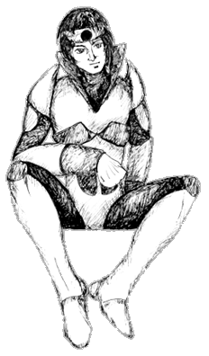
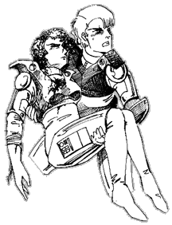
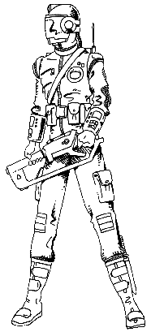

The following material is from
THE THIRD INVID
WAR, a fan supplement by
Dave Deitrich and
Chris
Meadows. Please feel free to use, copy, and distribute
it as you see fit. All we ask is that you give proper credit to us and do not
claim that it is your own work. Comments and suggestions are welcome.

NEW CHARACTER CLASSES
CONTENTS:
RENEGADE INVID

"Look, mentally I'm older than Lincoln, emotionally I'm six years old,
physically I look like I'm in my twenties, my hormones are going top
speed, and I'm something evolved from a slug evolved into something
evolved from an ape. And YOU got the nerve to say YOU'RE confused?!?"
Kayagh, Renegade Stage 5 Invid
Traditionally members of the Invid race have had a strong hive-mentality. To
the Invid, there was no "self", only an overwhelming devotion to the Regis and
the Invid collective. This all changed however when the Regis began creating
Invid in human form with human brain patterns. For the first time in the
history of the race, individual Invid began to think for themselves. While
this resulted in much more unpredictable and deadly fighters, it also caused a
problem that the Regis had not anticipated; humanoid Invid began to feel
emotions such as love, hate, anger, and fear; emotions they had no idea how
to deal with. And as a result, again for the first time in Invid history,
some Invid actually began to question the plans of the Regis!
Many stage 5 invid possess a certain amount of rebelliousness, but only a
very few actually go so far as to disobey the Regis' directives and work
against the Invid occupation forces. Often these renegade Invid work by
themselves, since there is still much distrust and hatred between them and
the humans, but every once in a while both humans and invid will overcome
their prejudices and work together against the stage 6 invid overlords.
NOTE: Renegade invid with the resistance are very rare, and
likewise encounters with renegades should be extremely rare. If
the GM consents to letting a player play a renegade invid, then certainly no
more than one invid per party should be allowed!
- GENDER:
- 60% female, 40% male.
- ALIGNMENT:
- Any, though if a stage 5 invid is working with the
resistance then principled, scrupulous, unprincipled, or aberrant.
Any others are not likely to have enough patience to join a resistance group,
or even to go renegade in the first place.
- HEIGHT:
- 5 feet plus 3D6 inches.
- WEIGHT:
- 130 lbs plus 2D4x10 lbs.
- PHYSICAL S.D.C.:
- 6D6
ATTRIBUTES:
| I.Q. | 3D6 |
M.E. | 3D6 |
M.A. | 2D6 |
P.S. | 3D6 |
| P.P. | 4D6 |
P.E. | 3D6 |
P.B. | 4D6 |
Spd. | 3D6 |
As usual, any attribute of 16 or higher gets to roll an additional 1D6 for
that attribute.
SPECIAL ABILITIES:
- Can automatically sense the presence of other invid within a one mile
(1.6 km) area.
- Can communicate telepathically with other invid; range: one mile (1.6 km).
- Can attempt to fool other invid into believing that the character is still
loyal to the invid cause. Fooled invid will not attack the character and
MAY follow the character's instructions if they do not conflict
with the invid's previous instructions. The fooled invid will
automatically see through the ruse if the character tries to help his
human allies or tries to interfere with Invid operations. Roll
percentile dice on the table below to see if the invid
is fooled.
- Stage 1 Invid: 1-35% chance of being fooled.
- Stage 2 Invid: 1-30% chance of being fooled.
- Stage 3 Invid: 1-25% chance of being fooled.
- Stage 4 Invid: 1-20% chance of being fooled.
- Invid Brains: 1-15% chance of being fooled.
- Stage 5 Invid: 1-5% chance of being fooled.
- Stage 6 Invid: No chance; will automatically sense a
ruse.
- The Regis: No chance; will automatically sense a
ruse.
R.C.C. SKILLS:
- Pilot Invid Battloids (65% + 5% per level of experience)
- Mecha Combat: Invid Battloids (Bonuses identical to Mecha Combat:
Alpha Fighter)
- Navigation: land, air, water (+15%)
- Navigation: space (+10%)
- Detect Ambush (+5%)
- Detect Concealment (+5%)
- Hand to Hand: Expert - 1
- W.P. Energy Pistol
- W.P. Energy Rifle
- Trivia: Protoculture (30% + 5% per level of experience) - 2
- Trivia: Invid Race (60% + 5% per level of experience) - 2
- May be upgraded to Martial Arts at the cost of one "other" skill.
- These skills represent an invid's basic knowledge about protoculture
and the invid race in general. Characters should use these skills when
attempting to answer a question that "any Invid should know," such as
invid tactics and hive designs. GMs may overrule these skills if their
effects might be too damaging to the plot of the adventure.
- OTHER SKILLS:
- Select 10 other skills. Plus two at third level, two at sixth level, and
one at tenth level. All new skills start at level one proficiency. Note
that some skills must be taught by humans before any invid can gain the skill;
it is highly unlikely that a stage 5 invid who has just gone rogue will know
computer programming. Players and GMs should use common sense when
determining what skills a renegade invid has.
- Communications: Any
- Domestic: Any
- Electrical: None
- Espionage: Any (+10%)
- Mechanical: None
- Medical: First Aid Only
- Physical: Any (+5% where applicable)
- Pilot: Any, but any aircraft, spacecraft, or mecha skills count
as TWO skill selections each. Maximum allowable mecha combat level is
Mecha Combat BASIC. All pilot skills MUST be taught by humans;
they cannot be taken as initial skills.
- Pilot Related: Any (+5%)
- Rogue Skills: Any (+5%)
- Science: Any, but any skill besides Basic or Advanced Math
counts as TWO skill selections.
- Technical: Any
- Weapon Proficiencies: Any
- Wilderness: Any, but must be taught by humans; they cannot be
taken as initial skills.
- SPECIAL RULE:
- Inexperienced invid (or human) characters may elect to NOT fill all of
their skill slots, and then claim them at a later time to represent skills
learned during their adventures when their background can justify learning
such skills. Skills can only be claimed when a character gets enough
experience to advance a level. For example, a new renegade invid PC fills 5
skill slots, leaving 5 blank. When the character gains enough experience to
advance to level 2, he chooses to take Pilot Cyclone and Mecha
Combat BASIC: Cyclone as skills, using up 4 skill slots (see below). He
justifies this by saying that the veritech pilot he has been traveling with
has taught him how to use "earther mecha". The player still has 1 skill slot
available for when he reaches level 3 or later. This rule may also be used
for human children or other inexperienced characters (i.e. "Annie"). Delayed
skills start at level 1 proficiency when claimed.
EXPERIENCE LEVELS:
- 0,000-1,950
- 1,951-3,900
- 3,901-8,800
- 8,801-17,600
- 17,601-25,600
- 25,601-35,600
- 35,601-50,600
- 50,601-70,600
- 70,601-95,600
- 95,601-125,600
- 125,601-175,600
- 175,601-225,600
- 225,601-275,600
- 275,601-325,600
- 325,601-375,600
- SAVINGS:
- (1D4-1) x 10 (Yes, 0 initial credits is
possible)
- STANDARD EQUIPMENT:
- One fully-functional suit of Invid
Body Armor and one Invid Type II
Energy Pistol with two extra protoculture cells. 1D4 weeks of reserve
food and water rations. The GM may choose whether or not to let the character
have a captured invid battloid, or he may let the player roll on the table
below:
Renegade Invid Starting Mecha
(Roll Percentile Dice)
- 01-10
- Invid Assault
Battloid
- 11-55
- Invid Royal Command Battloid (See Invid Invasion page 84)
- 56-00
- No Mecha or Mecha destroyed during escape
NOTE: Finding spare parts for Invid Battloids will be VERY hard
(almost next to impossible). Bio-Maintenance Engineers trying to repair Invid
mecha have an automatic -20% to their rolls, and must work with the Invid
AT ALL TIMES during the repair process.
GANGER O.C.C.
The Invid Wars have been very hard on the general civilian
population of Earth. The democratic governments of the past have
collapsed, and along with them almost all civil services such as
police, hospitals, schools, etc. Many people have given in to
despair, and spend their days huddled in shelters or under rubble
praying that everything will go away. Others have
adapted and learned to live in the harsh new world, becoming
stronger and more resiliant (and more brutal) in order to survive
in a land where "might makes right". Many of these survivors have
banded together into gangs, working together for mutual protection.
Some gangs are actually benevolent, ruling the cities they inhabit
with a fair (if cold) hand. But by far the majority of them
are cruel and criminal, raping and pillaging towns for their own
pleasure and survival. The lowest have even thrown in with the Invid,
and now work as pawns of their overlords. These Invid sympathizer
gangs (called FRAGS) are
particularly dangerous, as they actively hunt down dissidents and
resistance fighters for their Invid masters.
Sometimes gangers will become disillusioned with their fellow
gang members and seek to escape. Leaving a gang is not hard; all one
needs to do is sneak out of their city and into the wastelands
that surround them. Often these ex-gangers will hook up with
resistance fighters or rebels and work together for something
better. Although usually young, poor, and uneducated, these
warriors bring with them survival skills that are invaluable to a
party travelling in the destroyed cities and urban wastelands of Earth.
- ATTRIBUTE REQUIREMENTS:
- Gangers who are still alive are
generally fast, clever, and agile, but there are no real
requirements.
O.C.C. SKILLS:
- Streetwise (+20%)
- Pilot: Motorcycle (+15%)
- Prowl (+10%)
- W.P. Knife
- W.P. Revolver
- Hand to Hand: Basic (may be upgraded to Expert at the cost of
one "extra" skill, and Martial Arts at two "extra" skills)
- OTHER SKILLS:
- Select 15 other skills, plus 2 at level three, 2 at level six, and
1 at level ten. All new skills start at level 1 proficiency.
- Communication: Radio: Basic only.
- Domestic: Any (+5%).
- Electrical: Basic Electronics only.
- Espionage/Military: Any (+5%).
- Mechanical: Automotive Mechanics, Baic Mechanics, and
Locksmith only.
- Medical: First Aid only.
- Physical: Any (+5% where applicable).
- Pilot: Any (+5%, mecha-related skills count as 2 skill
selections).
- Pilot Related: Navigation (Air, Land, Water) only.
- Rogue: Any (+15%).
- Science: Mathematics: Basic only.
- Technical: Demolitions only (counts as 2 skill
selections).
- Weapon Proficiencies: Any.
- Wilderness Skill: Any (+5%).
SPECIAL RULE:
Young gangers may elect to NOT fill all of their skill slots,
and then claim them at a later time to represent skills learned
during their adventures when their background can justify learning
such skills. Skills can only be claimed when a character gets
enough experience to advance a level. For example, a new Ganger
fills 10 skill slots, leaving 5 blank. When the character gains
enough experience to advance to level 2, he chooses to take Pilot
Cyclone and Mecha Combat BASIC: Cyclone as skills, using up 4
skill slots. He justifies this by saying that the veritech pilot
he has been traveling with has taught him how to use Cyclones. The
player still has 1 skill slot available for when he reaches level
3 or later. This rule is primarily intended for human children or
other inexperienced characters (i.e. "Annie"). Delayed skills
start at level 1 proficiency when claimed.
EXPERIENCE LEVELS:
- 0,000-1,875
- 1,876-3,750
- 3,751-7,250
- 7,251-14,100
- 14,101-21,200
- 21,201-31,200
- 31,201-41,200
- 41,201-51,200
- 51,201-71,200
- 71,201-101,500
- 101,501-136,500
- 136,501-186,500
- 186,501-236,500
- 236,501-286,500
- 286,501-326,500
- SAVINGS:
- (1D6-1) x 10 (yes, 0 initial credits is possible)
- STANDARD EQUIPMENT:
- An automobile, jeep, dune buggy, or motorcycle. One knife, one
pistol, and one rifle weapon (may be MDC weapons). 1D6 spare
clips for each weapon. 30% chance that the character will own a
suit of REF or Southern Cross armor (70% chance if a frag). See
the entry on FRAGS for possible
weapon and armor selections.
REF COMBAT PARAMEDIC O.C.C.

The REF Combat Paramedic is a highly-trained medical specialist who is a vital
part of the REF Military. While not as experienced or as knowledgable as a
true Medical Doctor, the paramedic is trained in all forms of emergency
medicine and is familiar with triage medical practices and addressing critical
life-threatening wounds. More importantly, the Combat Paramedic is
experienced in military tactics and can defend himself/herself in the field as
well as keep pace with other military units. In terms of medicine, the
paramedic is qualified to perform everything up through simple surgery and
common medical procedures (appendectomies, shrapnel removal, delivering
babies, etc.) but is not experienced in more advanced areas such as combatting
viruses or brain surgery. The main focus of the Combat Paramedic's training
is to keep a wounded soldier alive and stable until he can be evacuated to a
field hospital.
The Combat Paramedic is typically a resourceful individual who thinks fast and
can make due with limited resources. He/she will typically try to avoid
combat and bloodshed (it goes against his/her hippocratic oath) but also
realizes that sometimes it is necessary to use lethal force to defend one's
self and loved ones. The paramedic is trained in combat tactics, however, and
can hold his/her own in a fight. Combat Paramedics are highly sought after
among resistance groups on Earth during the Third Invid War. They provide
invaluable services in a world where combat is common, swift and deadly and
trained medical staff are virtually nonexistant.
REF Combat Paramedics recieve Cyclone Basic training as part of their REF
training, and are usually issued a VR-117
Firefly when going into the field. They typically are not permitted
training in other mecha such as Veritechs and Destroids.
ATTRIBUTE REQUIREMENTS: IQ 10 or higher.
O.C.C. SKILLS:
- Paramedic (+25%)
- Field Surgery (+15%)
- Radio: Basic
- Wilderness Survival (+5%)
- Pilot Truck: Small (Ambulance) (+10%)
- Pilot Motorcycle (+10%)
- Pilot Cyclone (+10%)
- Mecha Combat Basic: Cyclone
- Hand to Hand: Expert (may be upgrade to Martial Arts at the cost of
one "extra" skill)
- W.P. Automatic Pistol
- OTHER SKILLS:
- Select 12 other skills, plus two additional skills
at level 3, two at level 6, two at level 9, and two at level 12.
All new skills start at level 1 proficiency.
- Communication: Any
- Domestic: Any
- Electrical: Basic Electronics only.
- Espionage: Detect Ambush, Detect Concealment, Land Navigation, and Tracking only.
- Mechanical: Basic Mechanics only.
- Medical: Any, but Pathology counts as two skills and Medical Doctor counts as three (!) skills. (+10%)
- Physical: Any
- Pilot: Any except Mecha piloting skills. (+5%)
- Pilot Related: Any
- Rogue: Any
- Science: Any (+5%)
- Technical: Any, except Demolitions and Demolitions Disposal.
- Weapon Proficiencies: Any, except Cyclone Weapon Systems.
- Wilderness: Any (+5%)
EXPERIENCE LEVELS:
- 0,000-2,000
- 2,001-4,000
- 4,001-8,200
- 8,201-16,400
- 16,401-24,500
- 24,501-34,600
- 34,601-49,700
- 49,701-69,800
- 69,801-94,900
- 94,901-129,000
- 129,001-179,100
- 179,101-229,200
- 229,201-279,300
- 279,301-329,400
- 329,401-389,500
- SAVINGS:
- 3D6 x 100
- MONTHLY WAGES:
- 3,000 for a new recruit (levels 1-3); 3500 for 4th level and higher;
paramedics above 7th level usually become field doctors and earn
7,000 or more per month.
STANDARD EQUIPMENT:
- Sidearm (usually M-37 "Weasel" Auto-Pistol)
- Medical Kit (includes first-aid kit, bandages, antiseptics,
healing/disinfectant salves, aspirin, painkiller, antibiotics,
hypodermic gun, electronic thermometer, stethoscope, tounge
depressors, pen flashlight)
- Surgical Kit (includes scalpels, clamps, sutures, needles, etc)
- Standard REF Survival Kit
- Uniform
- Reusable Surgical Gown and Gloves
- CVR-4 armor
- Cyclone (Typically VR-117 Firefly,
sometimes VR-135 Forager)
- Portable field computer
- Wrist-radio (short-range--eight miles)
- Emergency Beacon (20 mile range)
- Four weeks' rations
- Flashlight
- Four signal flares
- SPECIAL CLEARANCE UPON ASSIGNMENT:
- Additional medical equipment, including the
CA-106 "Hos-box" for use with
VR-117 Cyclone.

The REF Military Police (REF MP) is the expeditionary force's version of the
Southern Cross Global Military Police. Like the GMP, the REF MP is an elite
intelligence and law enforcement division that maintains order within REF
forces and ensures that robotechnology is never compromised or abused. REF MP
agents are stationed on all ships and bases in the expeditionary force.
Although they share the same facilities and use the same mecha as the regular
troops, they have their own reporting structure and are answerable only to
their MP superiors and the REF high command.
REF Military Police officers are heavily trained in forensic arts such as
tracking, investigation, and interrogation. They are also extensively drilled
in hand-to-hand and modern firearm combat skills so that they can hold their
own in combat when necessary. They are given basic familiarity training in
most REF mecha but are specifically trained to use
REF Cyclones and
Southern Cross Garlands. REF MP officers
are also experienced in crowd control measures, and are even skilled in
emergency medical skills to care for injured persons until paramedics can
arrive.
Like their counterparts in the GMP, REF Military Police are given top security
clearance, access to special items and mecha, and the freedom to act under
their own discretion during an investigation. Because of this preferential
treatment most of the standard REF soldiers consider the REF MP to be snobbish
and arrogant. However, the majority of REF MP officers are loyal, dependable
and trustworthy soldiers who strongly believe in the principles of the REF.
ATTRIBUTE REQUIREMENTS: A high IQ and PS (>10) are preferred, but not
required.
O.C.C. SKILLS:
- Radio: Basic (+20%)
- Surveillance Systems (+30%)
- Intelligence (+15%)
- Interrogation (+10%)
- Tracking (+20%)
- Criminal Sciences and Forensics (+15%)
- First Aid (+5%)
- Field Surgery (+30%)
- Pilot Motorcycle (+20%)
- Pilot Mecha: Cyclone & Garland (all) (+20%)
- Weapon Systems (+15%)
- Find Contraband, Weapons, & Cybernetics (Invid experimets): 40% + 4% per level of experience
- Streetwise (+20%)
- W.P. Gallant
- W.P. Heavy
- Hand to Hand: Martial Arts - 1
- Martial Arts can be changed to Aikido, but with GM's permission, and the
ability to find the skill (Rifts World Book 8: Japan)
- OTHER SKILLS:
- Select 12 other skills, plus three at level 3, two at levels 6, two at
level 9, and one at level 12. All new skills start at level 1 proficiency.
- Communications: Any (+10%)
- Domestic: Any
- Electrical: Basic only
- Espionage: Disquise, Escape, and Sniper only (+5%)
- Mechanical: Automotive, Locksmith, and Veritech Mechanics (only applicable to cyclones)
- Medical: Paramedic (counts as 2 skills) or Medical Doctor (counts as 3 skills)
- Military: Demolitons Disposal only (+10%)
- Physical: Any, except acrobatics
- Pilot: Any (+10%) except mecha combat is basic
- Pilot Related: Any (+5%)
- Rogue: Any
- Science: Any (+5%)
- Technical: Any, except Operate Heavy Power Tools
- Weapon Proficiencies: Any
- Wilderness: Any (+5%)
EXPERIENCE LEVELS:
- 0,000-1,925
- 1,926-3,850
- 3,851-7,450
- 7,451-14,900
- 14,901-21,000
- 21,001-31,000
- 31,001-41,600
- 41,601-53,000
- 53,001-73,000
- 73,001-103,500
- 103,501-139,000
- 139,001-189,000
- 189,001-239,000
- 239,001-289,000
- 289,001-339,000
- SAVINGS:
- 4D6X100
- MONTHLY WAGES:
- Monthly Wages: 3,000 for levels 1-5, 4000 levels 6+
STANDARD EQUIPMENT:
- Gallant 1000
w/ Rifle attachment and flash suppressor
- M-37 Weasel
- First-aid kit w/ emergency equipment (pain killer, turniquettes, etc.)
- Standard REF survival kit
- Dress and Combat uniforms
- CVR-4 Body Armor
- VR-122 Protector Cyclone (Former Southern Cross
members may have a Garland 6 or 7)
- Portable Field Computer
- Wrist Radio (20 mi)
- Emergency Beacon
- 4 Weeks Rations
- Flashlight
- Handcuffs
- Night Stick (1D6 SDC Damage)
- 10 Tracer Bugs (See Robotech RPG pg. 80)
- 10 Signal Flares
- SPECIAL CLEARANCE UPON ASSIGNMENT:
- Heavy Weapons, Rifles, Mecha, vehicles, aircraft, personnel, etc.
REF COMBAT ENGINEER O.C.C.

(For TIW/Sentinels, but adaptable to Macross and Southern Cross)
Ever since the U.S. Army Corps of Engineers, construction engineers have been
a vital part of the armed forces, building (or blowing up) bridges, bases, and
other structures to aid in the accomplishment of a military objective. Army
Engineers also act as "sappers," using special equipment to clear areas of
land mines and booby-traps. In peacetime, combat engineers perform civilian
works, such as building dams (such as Bagnall Dam in Missouri) and work to
avert disasters such as earthquakes and flooding.
The services of a combat engineer are a much-needed commodity during the
Invid occupation of Earth. Many buildings and fortifications are half-ruined,
and only skilled construction workers can repair them. The Resistance can
always use the services of a military engineer to help defeat fortifications
made by the Invid, and pay on individual jobs can often be astounding.
ATTRIBUTE REQUIREMENTS: IQ 9, PE 12 or higher.
O.C.C. SKILLS:
- ADAPTATIONS:
- For Macross, remove Cyclone Piloting/Combat and replace with two
additional "other" skills. Ignore the skills and categories that
Macross didn't have, and the only mecha combat allowed under Pilot
Skills is Destroid Combat. Veritech piloting and combat is NOT allowed.
For Southern Cross, replace Cyclone Piloting/Combat with Battloid
Piloting/Combat. Again, the only mecha that can be piloted are
Battloids. No Veritechs.
- OTHER SKILLS:
- Select 14 other skills, but at least four must come from Electronic
and/or Mechanical, and two from Technical. Plus two additional skills
at Level 3, two at Level 6, two at Level 9, and two at Level 12.
All new skills start at Level 1 proficiency.
- Communication: Any
- Domestic: Any
- Electrical: Any (+5%), including Electrical Engineer.
- Espionage: Wilderness Survival and Detect Concealment only.
- Mechanical: Any (+10%), including Mechanical Engineer.
- Medical: First Aid or Paramedic (counts as 2 skills) only.
- Physical: Any
- Pilot: Alpha, Beta, Hovertank, or VF series only (+5%). Mecha
Combat is limited to basic.
- Pilot Related: Any (+10%).
- Rogue: Any (+5% to Safe-Cracking).
- Science: Any (+5%).
- Technical: Any (+10%).
- Weapon Proficiencies: Any, except Cyclone Weapon Systems.
- Wilderness: Any
EXPERIENCE LEVELS:
- 0,000-2,120
- 2,121-4,240
- 4,241-8,480
- 8,481-16,960
- 16,961-24,960
- 24,961-34,960
- 34,961-49,960
- 49,961-69,960
- 69,961-94,960
- 94,961-129,960
- 129,961-179,960
- 179,961-229,960
- 229,961-279,960
- 279,961-329,960
- 329,961-389,961
- SAVINGS:
- 4D6 x 100 (Combat Engineers are among the most highly-paid of the REF
specialists)
- MONTHLY WAGES:
- 3,000 for a new recruit (levels 1-5); 3800 for 6th level and higher;
officers receive 5,000 to 6,000 credits per month or more.
STANDARD SENTINELS/TIW EQUIPMENT:
- Energy pistol (often Gallant or SAL-9)
- S.D.C. sidearm (usually Wolff Auto Pistol or Browning GP-35)
- Portable welding unit
- Uniform
- CVR-4 armor
- Cyclone Cycle (usually one of the light models, or the VR-112 Samson for special missions)
- Portable field computer (with CAD program if design engineer)
- Wrist-radio (short-range--eight miles)
- Tool kit
- Four weeks' rations
- Flashlight
- Three signal flares
STANDARD INVID INVASION EQUIPMENT:
- Energy pistol (often Gallant or SAL-9)
- S.D.C. sidearm (usually Wolff Auto Pistol or Browning GP-35)
- Portable welding unit
- Uniform
- CVR-3 armor
- Tool kit
- Four weeks' rations
- Flashlight
- Three signal flares
- Land Vehicle (may or may not be a Cyclone; GM's decision).
- ADAPTATIONS:
- For Macross, remove the Cyclone and CVR-3 armor and energy weapon. Add
an S.D.C. submachine gun or rifle. For Southern Cross, remove the Cyclone
and replace the CVR-3 armor with the standard body armor of whatever army the
engineer is attached to (usually Civil Defense Squad or the Global Military
Police).
- SPECIAL CLEARANCE UPON ASSIGNMENT:
- Additional equipment, surveying tools, explosives, mecha, access to
construction shops and subordinate construction workers.
CIVILIAN CONSTRUCTION ENGINEER
(For TIW/Sentinels, but adaptable to Macross and Southern Cross)
The civilian engineer could be called the equivalent of the combat engineer
but employed in the private sector. These individuals are often placed in
command of groups of laborers working on construction projects. Starting
out, these engineers are sub-contractors to one or more levels of higher-level
construction engineers, who are in turn subcontractors to contracting
companies. As they gain more experience, the engineers advance upward,
getting more men (and subcontractors) under their command. Eventually, they
may become the heads of their own contracting organizations, passing on
contracts to subordinate (lower-level) engineers.
In any Robotech era, construction engineers will usually never lack for a job.
But in the Macross and Invid wars era in particular, when reconstruction was
commencing at a startling rate, construction engineers are particularly
sought-after, with even the lowest-level engineer receiving astounding
salaries (up to ten times the base) from groups such as E.B.S.I.S. and RDF.
ATTRIBUTE REQUIREMENTS: IQ 9, PE 12 or higher.
O.C.C. SKILLS:
- OTHER SKILLS:
- Select 16 other skills. Plus two at third level, two at sixth level, and
one at tenth level. All new skills start at level one proficiency. All
new skills start at level one proficiency. "Other Skill" Categories are
the same as the Nonmilitary Personnel OCC, with an additional bonus of
+10% to any construction-related skills.
EXPERIENCE LEVELS:
- 0,000-2,120
- 2,121-4,240
- 4,241-8,480
- 8,481-16,960
- 16,961-24,960
- 24,961-34,960
- 34,961-49,960
- 49,961-69,960
- 69,961-94,960
- 94,961-129,960
- 129,961-179,960
- 179,961-229,960
- 229,961-279,960
- 279,961-329,960
- 329,961-389,961
- SAVINGS:
- 4D6 x 100
- MONTHLY WAGES (from contracting agency):
- 3,200 for a recent trade school graduate (levels 1-5); 4,200 for 6th level
and higher; experienced contractors receive 5,500 to 6,500 credits per
month or more. Self-employed contractors may receive ten to hundreds of
thousands of credits per job, depending on the quality of the workmanship,
the size and complexity of the project, and the number of men under him.
It is possible to receive multi-MILLION-credit contracts, but not likely
in terms of gameplay; the character would have to be AT LEAST tenth level
for his or her contracting agency to be well-known enough to get that
kind of deals.
STANDARD EQUIPMENT: